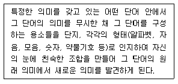
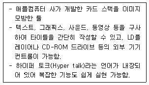
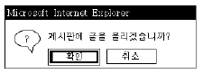
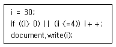
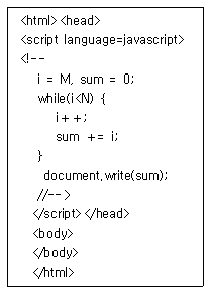

멀티미디어콘텐츠제작전문가(구) (2006-03-05 기출문제)
1과목: 멀티미디어개론
1. OSI 모델 계층에서 전송계층의 주요 기능은?
- 동기화
- 노드-대-노드 전달
- 프로세스-대-프로세스 메시지 전달
- 라우팅 표의 갱신과 유지보수
(정답률: 알수없음)

2. “OSI 7 Layer 중 물리계층은 물리적인 매체를 통한 ( )를(을) 전송하는데 필요한 기능을 제공한다.” ( )안에 들어갈 적절한 단어는?
- 비트
- 프로그램
- 대화제어
- 프로토콜
(정답률: 알수없음)
3. OSI 7 Layer Model 중 통신 경로의 확립이나 단절, 정보 전송 방식을 어떻게 규정할 것인가를 결정하는 Layer는?
- Network Layer
- Session Layer
- Transport Layer
- DataLink Layer
(정답률: 알수없음)
4. 다음 중 데이터 통신의 물리적인 연결 인터페이스와 전자신호의 규격을 규정하는 기구는?
- BSI
- EIA
- ANSI
- ISO
(정답률: 알수없음)
5. 다음 중 주소 190.0.46.201의 기본 마스크는?
- 255.0.0.0
- 255.255.0.0
- 255.255.255.0
- 255.255.255.255
(정답률: 알수없음)
6. 국제 표준화 기구가 제정한 그래픽 표준은 아니지만 "Silicon Graphics" 사가 만든 그래픽 라이브러리를 확장한 산업체 그래픽 표준은 다음 중 어느 것인가?
- VRML
- JPEG
- PHIGS
- OPEN GL
(정답률: 알수없음)
7. 근거리에 놓여 있는 컴퓨터와 이동단말기, 가전제품 등을 무선으로 연결하여 쌍방향으로 실시간 통신을 가능하게 해주는 규격을 말하거나 그 규격에 맞는 제품을 이르는 말은?
- 단방향 통신(Simplex)
- 쌍방향 통신(Duplex)
- 블루투스(Bluetooth)
- http(hypertext transfor protocol)
(정답률: 알수없음)
8. 하이퍼텍스트 문서는 무엇을 통해 링크되는가?
- DNS
- TELNET
- 포인터
- 홈페이지
(정답률: 알수없음)
9. 다음 중 하이퍼미디어에 대한 설명으로 거리가 가장 먼 것은?
- 각 정보가 선형적 구조로만 구성되어야 한다.
- 정보는 작은 조각으로 구성될 수 있어야 한다.
- 각 정보 조각은 서로 연관성이 있어야 한다.
- 하이퍼텍스트에 이미지, 그래픽, 비디오, 오디오 등 멀티미디어 요소를 포함한 형태를 말한다.
(정답률: 알수없음)
10. 우리나라에서 채택한 아날로그 NTSC 방식의 TV화상은 초당 몇 프레임을 사용하는가?
- 1초당 15 프레임
- 1초당 24 프레임
- 1초당 30 프레임
- 1초당 34 프레임
(정답률: 알수없음)
11. 비디오텍스(Videotex)에 관한 설명 중 거리가 가장 먼 것은?
- 비디오텍스는 전화 회선과 TV를 이용한 정보서비스이다.
- 비디오텍스는 단방향 통신방실을 이용한다.
- 비디오텍스는 PSTN이나 CATV 시스템을 이용한다.
- 대화형 양방향 미디어로서 요구되는 정보를 즉시 제공할 수 있다.
(정답률: 알수없음)
12. 다음 중 멀티미디어의 특징으로 볼 수 없는 것은?
- 통합성(Integrity)
- 상호작용성(Interactivity)
- 연결성(Connectivity)
- 독립성(Independence)
(정답률: 알수없음)
13. 다음 이미지 파일 포맷 중 벡터 정보를 표현할 수 없는 것은?
- AI
- EPS
- WMF
- TIFF
(정답률: 알수없음)
14. 다음 중 PNG 이미지 포맷에 대한 설명으로 거리가 가장 먼 것은?
- 품질의 손실이 없는 방법으로 압축한다.
- 투명색과 투명도를 조절하루 수 있다.
- 인터레이싱 기능을 제공한다.
- 8비트 컬러만을 지원한다.
(정답률: 알수없음)
15. 문자들의 집합에 대해 그 행동과 특성을 하나하나 부여하는 것으로 비, 불, 연기, 폭발 등의 자연 현상을 애니메이션으로 제작하고자 할 때 사용되는 특수효과는?
- 미립자 시스템(Particle System)
- 로토스코핑(Rotoscoping)
- 모핑(Morphing)
- 트위닝(Tweening)
(정답률: 알수없음)
16. 다음 중 양방향 파일 전송 서비스를 제공하기 위한 프로토콜은?
- TELNET
- SMTP
- FTP
- NFS
(정답률: 알수없음)
17. TV 수신 카드 기능 중에서 그래픽 카드에 보내는 화면과 TV수신 카드가 보내는 화면을 서로 중첩 시키는 방식을 가리 키는 용어는?
- 오버레이
- 동영상 캡처
- 버스마스터링
- 듀얼 프레임
(정답률: 알수없음)
18. CRT 모니터에 대한 설명 중 활성화율(Refresh Rate)에 대하여 가장 적절하게 설명한 것은?
- 단위 영역 당 픽셀의 개수를 나타내는 비율이다.
- 초당 화면의 몇 번 칠해지는가를 나타내는 회수이다.
- 편광판에 가해지는 전압의 크기를 나타낸다.
- 전자빔이 특정 위치에 형광물질에 도달되는 회수를 나타낸다.
(정답률: 알수없음)
19. 다음 컬러 모델 중 인간의 시각 시스템과 가장 유사하고 색상, 채도, 명도로 나타내는 것은 어는 것인가?
- RGB 모델
- CMYK 모델
- HSV 모델
- Indexed Color 모델
(정답률: 알수없음)
20. 흑백 및 컬러 정지화상을 위한 국제 표준안으로 이미지의 압축 및 복원 방식에 관한 표준안은?
- JPEG
- MPEG
- GIF
- TIFF
(정답률: 알수없음)
21. 다음 인터넷 방송에 관한 설명 중 거리가 가장 먼 것은?
- 양방향을 갖는다.
- 채널수가 제한적이다.
- 방송 외에 부가적인 내용을 전달할 수 있다.
- 사용자가 원하는 시간에 볼 수 있다.
(정답률: 알수없음)
22. 오디오용 콤팩트디스크 크기와 특성, 콤팩트 디스크상의 물리적인 데이터 배열, 오류의 정정, 디스크 회전 속도, 매개변수 등 오디오 디스크에 대한 표준 규정을 담고 있는 규정집은?
- 레드북(Red Book)
- 오렌지북(Orange Book)
- 그린북(Green Book)
- 엘로우북(Yellow Book)
(정답률: 알수없음)
23. 다음 중 백화점의 쇼핑, 도서관 안내, 정부기관, 은행, 전시장 등 공공장소에 설치된 무인 정보단말기는?
- KIOSK
- CCTV
- VOD
- VCS
(정답률: 알수없음)
24. 다음 중 오렌지북(Orange Book)에서 규정한 저장장치에 해당되지 않는 것은?
- CD-1
- CD-R
- CD-WO
- CD-MO
(정답률: 알수없음)
25. 다음 애니메이션의 종류 중 가장 단순한 형태로, 애니메이션의 모든 프레임을 일일이 그려 구성하는 프레임 기반(Frame based) 애니메이션은?
- 셀(Cel) 애니메이션
- 클레이(Clay) 애니메이션
- 플립북(Flip-book) 애니메이션
- 스프라이트(Sprite) 애니메이션
(정답률: 알수없음)
2과목: 멀티미디어기획및디자인
26. 다음 중 디자인의 기본요소가 아닌 것은?
- 면
- 원
- 입체
- 선
(정답률: 알수없음)
27. 다음 중 디자인의 필수 요소로서 물체의 조성성질을 뜻하는 것은?
- 색채
- 질감
- 크기
- 빛
(정답률: 알수없음)
28. 디자인의 기본 조건으로 볼 수 없는 것은?
- 경제성
- 심미성
- 일관성
- 합목적성
(정답률: 알수없음)
29. 형태의 시각적 특성으로써 비례에 대한 설명으로 거리가 가장 먼 것은?
- 황금분할 비율은 1:3이다.
- 비례란 어느 물리적 형태의 전체 크기나 양과 비교되어서 나타나는, 일부분의 크기나 양을 말한다.
- 개념적으로 비례는 시각적 질서나 균형을 결정하는데 쓰인다.
- 비례는 a:b 또는 1/2과 같은 비율 용어로 표현된다.
(정답률: 알수없음)
30. 형태적 시각요소에 대한 설명이다. 용어설명 중 거리가 가장 먼 것은?
- 개념(concept) : 마음속에서 지각되는 어떤 아이디어나 생각, 이론 또는 견해
- 변환(transformation) : 어떤 형상이나 형태, 움직임을 그리거나 상징화
- 착시(illusion) : 틀리거나 잘못된 지각으로, 실제적 존재와 감각을 통해 인식하는 것과의 불일치
- 윤곽(contour) : 형태를 한정하는 꼭지점, 가장자리 또는 외곽선
(정답률: 알수없음)
31. 컴퓨터 그래픽스에 대한 설명으로 거리가 먼 것은?
- 실물 그 자체의 재현은 물론 명암, 질감, 색감, 형태 등을 의도하는 대로 자유롭게 바꿀 수 있다.
- 제작물은 디자이너의 능력, 감각 등을 통해 무한한 이미지 창출은 물론 영구적인 보존이 가능하다.
- 제작 시 세밀한 부분이나 작은 시간의 차이도 표현할 수 있지만 수정이 어렵고 비용이나 시간이 많이 든다.
- 인쇄 출력 시 모니터의 색상과 실체 출력 색상이 다르게 나오므로 색 보정이 필요하다.
(정답률: 알수없음)
32. 컴퓨터그래픽스의 기본개념인 픽셀에 대한 설명이다. 거리가 가장 먼 것은?
- 일반적으로 픽셀의 종횡비는 2:1이다.
- 픽셀(pixel)이란 디지털 이미지와 최소단위를 말하는 것으로 Picture와 Element의 두 단어의 결합에서 생겨났다.
- 픽셀해상도는 하나의 픽셀이 몇 bit의 정보를 담고 있느냐에 따라 결정된다.
- 각 픽셀은 각각의 위치 값을 가진다.
(정답률: 알수없음)
33. 3차원 그래픽스에서 오브젝트의 기본 질감을 부여하기 위한 요소에 대한 설명 중 거리가 가장 먼 것은?
- Diffuse : 오브젝트 표면에 닿은 빛이 확산되는 정도를 나타낸다.
- Specular : 오브젝트의 가장 밝은 영역이 된다.
- Reflection : 오브젝트가 주변의 환경을 반사시키는 정도이다.
- Refraction : 오브젝트의 투명한 정도를 나타낸다.
(정답률: 알수없음)
34. 다음 중 그래픽 디자인(Graphic Design) 설명으로 가장 거리가 먼 것은?
- 그래픽 디자인의 어원(語源)은 그리스어로 “보다”라는 뜻의 그라피코스(GraphiKos)에서 왔다.
- 주로 시각적(視覺的)효과를 전달하는 과정에서 복제(復除), 양산(量産)되는 선전매체의 모든 효과를 나타낸다.
- 상업적(商業的) 판매촉진을 높이고 소비자에게 시각적인 인상을 아주 오래 기억하게끔 하는 디자인 과정이다.
- 그래픽 디자인에 있어서는 원고의 작품으로서의 가치가 아니고 완성된 인쇄물의 편집, 레이아웃 등이 작품의 가치판단의 대상이 된다.
(정답률: 알수없음)
35. 많은 아이디어를 얻기 위해 아무런 제약이 없는 상태에서 공상, 연상의 연쇄반응을 일으켜 아이디어를 내는 방식의 집단 사고 방법을 무엇이라 하는가?
- 시네틱스(Synectics)
- 연상의 기법(Association of Idea)
- 브레인스토밍(Brainstorming)
- 입출력법(Input-Output Technique)
(정답률: 알수없음)
36. 멀티미디어 시나리오 테마 결정시 구성되는 표현 중 가장 거리가 먼 것은?
- 표현의 간결성
- 표현의 친밀성
- 표현의 주체성
- 표현의 추상성
(정답률: 알수없음)
37. 다음은 시각의 원리 중 군화(群花)의 법칙을 설명한 것이다. 거리가 가장 먼 것은?
- 근접의 법칙 - 서로 가까이 있는 요소들은 하나로 뭉쳐져 보인다.
- 유사의 법칙 - 비슷한 성질을 가진 요소는 비록 떨어져 있다 하더라도 덩어리져 보이는 경향이 있다.
- 연속의 법칙 - 윤곽선으로 닫힌 공간은 하나의 도형을 이룬다.
- 공동운명의 법칙 - 비슷한 움직임을 지닌 것은 하나로 지각된다.
(정답률: 알수없음)
38. 배색에 관한 설명 중 거리가 가장 먼 것은?
- 이미지를 결정시키는 배색의 주요 요인으로 톤, 색상형, 대비량의 항목 등이 있다.
- 동일색상배색 사이에서는 명도, 채도의 차이가 발생하지 않는다.
- 배색은 한 부분에서만 효과를 보는 것이 아니라 문자나 그림 등과 같이 조합이 되었을 때 복합적인 효과가 나타난다.
- 보색에 의한 배색은 그림 전체의 색채와는 원만한 조화를 얻기 어려우므로 강조의 효과를 얻고자 할 때 적절히 사용한다.
(정답률: 알수없음)
39. 디자인의 요소 중 점(Point)에 대한 설명으로 거리가 가장 먼 것은?
- 점은 작을수록 점 같이 보이며 클수록 면처럼 보인다.
- 점은 크기를 갖지 않고 위치를 표시하는 것이다.
- 점은 위치를 나타내거나 강조, 구분, 계획 등을 나타내는 기능을 가진다.
- 점은 원형으로만 표현된다.
(정답률: 알수없음)
40. “원래 문학이나 철학에서 많이 사용하는 용어로, 은유를 뜻 한다. 사용자 인터페이스 디자인에 이것을 잘 이용하게 되면 전달하고자 하는 내용을 보다 친숙하고 쉽게 전달할 수 있으며, 사용자에게 예측 가능한 행동을 유도할 수 있다.”에 해당하는 용어는?
- 아이콘(Icon)
- 그래픽 유저 인터페이스(GUI)
- 네비게이션(Navigation)
- 메타포(Metaphor)
(정답률: 알수없음)
41. 게슈탈트의 심리법칙 중 거리가 가까운 요소끼리 하나의 묶음으로 보이는 것을 무엇이라고 하는가?
- 폐쇄성의 원리
- 연속성의 원리
- 유사성의 원리
- 근접성의 원리
(정답률: 알수없음)
42. 그리드 시스템(격자 구조)이 적용된 레이아웃을 멀티미디어 디자인에 적용하는 경우 얻어지는 장점이 아닌 것은?
- 콘텐츠의 확장성이 뛰어나다.
- 하나의 폼과 같은 기능으로 연계된 화면 제작이 용이하다.
- 심미적으로 안정적이고 상징적인 화면 디자인이 가능하다.
- 뛰어난 압축을 통해 용량을 급격히 감소시켜준다.
(정답률: 알수없음)
43. “개인 및 조직의 목표를 충족시키는 교환을 창조하기 위해 아이디어, 제품 및 서비스의 개념 정립, 가격 결정, 촉진 및 유통경로에 대한 계획 수립 및 이를 실천하는 과정”이 의미 하는 것은?
- 디자인정책
- 디자인관리
- 마케팅
- 상표동일화
(정답률: 알수없음)
44. 멀티미디어 화면 디자인에 대한 설명으로 가장 거리가 먼 것은?
- 빠른 다운로드가 가능한 압축된 이미지 사용
- 메뉴와 콘텐츠 영역의 유연성
- 간결한 레이아웃 디자인
- 모든 페이지의 독립성
(정답률: 알수없음)
45. 다음 중 스토리보드에 사용되는 용어의 약자가 바르지 못한 것은?
- 배경음악 : BGM(Back Ground Music)
- 효과음 : SE(Special effect)
- 해설 : ST(Story)
- 대사 : M(Ment)
(정답률: 알수없음)
46. GUI의 대표적 예로 정보의 종류나 기능을 의미하는 상징적 그림으로 컴퓨터 운영 체계에 효율성과 친근성을 부가하기 위하여 시작된 그래픽 요소를 무엇이라 하는가?
- ICON
- 쇽웨이브
- 일러스트
- 로고
(정답률: 알수없음)
47. 시각디자인 중 공간(4차원)디자인에 포함되는 것은?
- 애니메이션
- 일러스트레이션
- 포토디자인
- 타이포그래피
(정답률: 알수없음)
48. 웹 가상 커뮤니티에서 개인을 상징하는 대표적인 심볼로 원래 분신, 화신을 뜻하는 말은?
- 사인(sign)
- 아이콘(icon)
- 블릿(bullet)
- 아바타(avatar)
(정답률: 알수없음)
49. 다음 설명은 타이포그래피의 표현 중 무엇에 해당하는가?

- 공간
- 색
- 분리와 결합
- 글자의 배열
(정답률: 알수없음)
50. 타이포그래피(typography)에 대한 설명 중 거리가 가장 먼 것은?
- 활자, 혹은 철판에 의한 인쇄술을 가리켜왔지만 오늘날에 는 주로 글자를 구성하는 디자인을 일컫는다.
- 글자체, 글자크기, 글자사이, 글줄사이, 여백 등을 조절하여 전체적으로 읽기에 편하도록 구성하는 기술을 말한다.
- 타이포그래피(typography)는 “문자”하는 의미의 그리스어 “text"에서 유래한 말이다.
- 활자와 여러 가지 요소들을 이용하여 지면을 아름답고 내용이 충실히 전달되도록 하는 것이다.
(정답률: 알수없음)
3과목: 멀티미디어저작
51. 구조적 프로그래밍에 대한 설명으로 가장 거리가 먼 것은?
- 프로그램 표준화의 효과
- 기능 단위별 모듈화가 가능하다.
- 언어 확장 시 유지보수가 뛰어나다.
- 프로그램에 대한 오류가 적어 생산성이 향상된다.
(정답률: 알수없음)
52. 학습 내용을 개별 학습자 스스로 할 수 있도록 프로그램을 통하여 학습내용을 제공하고, 학습자의 이해도를 측정하여 결과에 따라 새로운 자료나 추가 내용을 제공하여 학습목표에 도달하게 하는 멀티미디어 개발 모형은?
- 개인교수형
- 시뮬레이션형
- 대화형
- 교수게임형
(정답률: 알수없음)
53. 인터넷 뱅킹을 이용하고자 은행 사이트에 접속하였다. 인증서를 사용하기 위해서 사용자 PC에 보안 모듈이 설치되었다. 이처럼 프로그램이 브라우저에 장착되는 방식을 무엇이 라고 하는가?
- 클라이언트(Client)
- 서버(Server)
- 플러그인(Plug-in)
- 객체지향 방식
(정답률: 알수없음)
54. 마이크로소프트사에서 윈도우 환경의 일반 응용 프로그램과 웹을 연결하기 위해 개발된 것으로 인터렉티브(Interactive)한 동적인 콘텐츠를 제작할 수 있는 것은?
- ActiveX
- JSP
- VRML
- SGML
(정답률: 알수없음)
55. 다음 중 플래시 MX에서 인스턴스네임을 지정할 수 없는 오브젝트는 무엇인가?
- 그래픽인스턴스
- 버튼인스턴스
- 무비클립인스턴스
- 텍스트필드
(정답률: 알수없음)
56. 플래시5.0에서 등록한 심볼이나 불러들인 외부이미지, 사운드, 동영상 등을 관리해주는 패널은?
- Components
- Layer
- Library
- Timeline
(정답률: 알수없음)
57. 다음 중 액션스크립트의 대표적인 표현 방식으로 거리가 가장 먼 것은?
- Object.Event
- Object.Variable
- Object.Method()
- Object.Properly
(정답률: 알수없음)
58. 플래시(Flash)액션스크립트 연산자의 설명으로 옳은 것은?
- a=b : a와 b가 같다.
- a%b : a를 b로 나눈 몫.
- a!=b : a와 b가 같지 않다.
- a＞b || a＜c : a가 b보다 크고, a가 c보다 작다.
(정답률: 알수없음)
59. 플래시 액션스크립트(Action Script)에서 자바스크립트, 디렉터, 비주얼베이직 등의 외부 프로그램과 연동시키는 액션은?
- load Movie
- setproperty
- fscommand
- loadVariables
(정답률: 알수없음)
60. 플래시에서 goto 명령을 이용해 이동하고자 한다. 이동 방법이 아닌 것은?
- scene
- frame number
- layer
- frame label
(정답률: 알수없음)
61. 매크로미디어 디렉터 무비를 HTML 문서에 포함시키려면 어떤 태그를 사용해야 하는가?
- embed
- href
- applet
- form
(정답률: 알수없음)
62. 무비클립 인스턴스의 이벤트를 다루는데 사용되는 이벤트 핸들러를 고르시오?
- Clip
- Event
- onClipEvent
- onMovieEvent
(정답률: 알수없음)
63. Multimedia ToolBook 은 Asymetric사의 비쥬얼 프로그래밍 저작도구이다. ToolBook에서 사용되는 스크립트 언어는?
- 링고(Lingo)
- 액션스크립트(Action Script)
- 오픈스크립트(Open Script)
- 비쥬얼스크립트(Visual Script)
(정답률: 알수없음)
64. 다음은 무엇에 대한 설명인가?

- 디렉터(Director)
- 아이콘 오소(Icon Author)
- 하이퍼 카드(Hyper card)
- 바이퍼 라이트(Viper Write)
(정답률: 알수없음)
65. 프로그램 흐름을 아이콘을 이용하여 흐름도 형태로 표현하는 것은?
- 스크립트 방식
- 아이콘 방식
- 카드 방식
- 프레임 방식
(정답률: 알수없음)
66. 다음 XML에 대한 설명 중 거리가 가장 먼 것은?
- 프로세싱 명령의 끝은 “?＞”이다.
- 이름은 대소문자를 구분하지 않는다.
- XML은 인터넷에서 태그들의 이름 충돌을 피하기 위해 이름영역(namespace)을 지원한다.
- XML은 UTF-8과 UTF-16을 지원하며 시스템 식별자로 URL을 다룰 수 있는 파서를 정의하고 있다.
(정답률: 알수없음)
67. CSS의 장점에 대한 설명으로 가장 거리가 먼 것은?
- 문서 전체를 일관성 있게 디자인 할 수 있다.
- 문서를 수정하기 어렵다.
- 브라우저 환경에 상관없이 제작한 사람의 의도대로 표현 된다.
- 문서 전반의 틀이나 세부항목을 일일이 지정하지 않아도 된다.
(정답률: 알수없음)
68. 스트리밍을 지원하는 동영상 포맷 형식과 가장 거리가 먼 것은?
- *.mpeg
- *.swf
- *.asf
- *.rm
(정답률: 알수없음)
69. 다음 중 자바스크립트(JavaScript) 변수 할당으로 맞는 것은?
- x = 25
- x ＞= 25
- x == y
- x = Wow
(정답률: 알수없음)
70. 자바스크립트(Javascript)의 논리 연산자 중 논리합(OR)의 의미를 갖는 연산자는?
- ||
- &&
- ^
- !
(정답률: 알수없음)
71. 자바 스크립트(Java Script)에서 두 개의 배열을 하나의 배열로 만들 때 사용되는 메소드(Method)는?
- deleteRow()
- sort()
- concat()
- slice()
(정답률: 알수없음)
72. 다음 중 자바스크립트(Javascript)의 설명으로 거리가 가장 먼 것은?
- 객체를 바탕으로 하지만 클래스가 없고 상속할 수도 없다.
- 자바 스크립트는 HTML 소스 코드 안에서 바로 인식하여 전송하기 때문에 UNIX, LINUX, WINDOW 제품군 등과 같은 OS(Operating System)에 제한 없이 동작한다.
- 자바 스크립트는 다양한 객체와 메소드를 가지고 있어, 인터넷 게임 등 멀티미디어 개발에 용이한 프로그램이다.
- 자바 스크립트는 일반적으로 HTML 파일에 기록되고 WEB상에 올려 진 스크립트 소스는 HTML 소스와 함께 공개 된다.
(정답률: 알수없음)
73. 자바스크립트의 Window 객체 중 다음 그림과 같이 다이얼 로그 박스를 나타내는 메소드는?

- Open( )
- Prompt( )
- Alert( )
- Confirm( )
(정답률: 알수없음)
74. 다음 자바스크립트 조건문에서 출력되는 값은 얼마인가?

- 32
- 31
- 30
- 60
(정답률: 알수없음)
75. 다음과 같은 식에서 sum의 값이 1부터 10까지의 합이 되기 위한 M과 N의 값으로 맞는 것은?

- M=1, N=9
- M=1, N=10
- M=0, N=9
- M=0, N=10
(정답률: 알수없음)
4과목: 멀티미디어제작기술
76. 아날로그 파형의 음악을 디지털 형태로 바꾸는 과정에서 미세한 잡음을 인위적으로 첨가하여 양자화 잡음과 음의 왜곡을 줄이는 방법을 무엇이라 하는가?
- 화이트노이즈(White noise)
- 클리핑(Clipping)
- 디더링(Dithering)
- 매핑9Mapping)
(정답률: 알수없음)
77. 다음 단위 중 소리의 크기를 나타내는 것은?
- bit
- Hz
- dB
- pcm
(정답률: 알수없음)
78. 아날로그 TV표준형식 중 PAL방식의 주사선 수는?
- 525
- 560
- 625
- 1125
(정답률: 알수없음)
79. 다음의 디지털 오디오 파일 형식들 중, MPEG 이용한 압축방식을 적용하고 있는 것은?
- mp3
- wav
- au
- vqf
(정답률: 알수없음)
80. 다음 파일 포맷 중 성격이 다른 하나는?
- TGA
- TIFF
- WMV
- GIF
(정답률: 알수없음)
81. 다음 중 EPS 파일포맷에 대한 설명으로 가장 적절한 것은?
- 256 컬러로 제한되어 있다.
- 컴퓨서브(Compuserve)사에서 개발하였다.
- Zsoft 사에서 제작된 페인트 브러시의 파일 포맷이다.
- 프린터에 그래픽 정보를 보내기 위해 등장한 Postscript 언어를 활용한 포맷이다.
(정답률: 알수없음)
82. 디지털 TV와 DVD 수준의 영상을 목적으로 제정된 MPEG 기술은?
- MPEG-1
- MPEG-2
- MPEG-4
- MPEG-7
(정답률: 알수없음)
83. 다음 중 한 장의 영상을 뜻하며 영상의 시간적 최소 단위를 나타내는 것은?
- 픽셀
- 해상도
- 프레임
- 데이터
(정답률: 알수없음)
84. 영상 장면 전환 기법 중에서 장면과 장면이 겹치면서 두 개의 장면이 서서히 바뀌는 방법으로 컷에서 가능한 장소의 변환과 시간의 변환을 좀 더 부드럽게 만들 수 있는 것을 무엇이라 하는가?
- 줌인(Zoom in)
- 디졸브(Dissolve)
- 컷(Cut)
- 클로즈업(Close up)
(정답률: 알수없음)
85. 기차가 화면의 왼쪽에서 오른쪽으로 지나가는 장면에 기차 소리를 편집하려고 한다. 소리의 현장감을 위해 기차의 위치에 따라 소리의 위치도 움직이려 한다면 음향 편집 시 조작하여야 할 오디오 프로세싱의 부분은?
- 패닝(Panning)
- 컴프레싱(Compressing)
- 딜레이 효과
- 이퀄라이징(Equalizing)
(정답률: 알수없음)
86. 3D 애니메이션을 생성하는 방법 중 Curve등의 경로를 따라 이동하는 경로 애니메이션은?
- Key Frame Animation
- Motion Path Animation
- In between Animation
- Motion Capture
(정답률: 알수없음)
87. 영상이나 음성 등의 아날로그 신호를 펄스 부호 변조(PCM)를 사용하여 전송에 적합한 디지털 비트 스트림으로 변환하고, 역으로 수신측에서 디지털 신호를 아날로그 신호로 변환하는 기기나 장치는?
- 코덱(CODEC)
- 콤포지트(Composite)
- 콤포넌트(Component)
- 캡처보드(Capture Board)
(정답률: 알수없음)
88. 비디오 압축, 부호화 방식인 H.261에 대한 설명으로 거리가 가장 먼 것은?
- 이 규격의 전송속도는 p(p=1~30)×64kbps이다.
- H.261은 실시간 압축/복원 처리용으로 개발하였다.
- H.261은 부호화방식으로 인트라프레임(intraframe)과 인터프레임(interframe)을 사용한다.
- 정지 이미지의 압축 및 복원에 관한 표준규격이다.
(정답률: 알수없음)
89. 다음 RGB 컬러 모델에 대한 설명 중 거리가 가장 먼 것은?
- 빛의 삼원색(Red, Green, Blue)이 기본색이 되는 컬러 모델이다.
- 여러 색의 빛을 더하면 흰색이 되는 빛의 성질을 이용 한다.
- 기본 색을 더하여 새로운 컬러를 만들어내므로 가산 모델(additive model)이라 불리 운다.
- RGB 컬러 모델은 컬러프린터나 인쇄 등에 유용하게 쓰인다.
(정답률: 알수없음)
90. 영상의 윤곽화 현상으로 디지털시스템에서 양자화 레벨이 충분하지 않거나 부정확하게 처리한 경우나 비트수를 줄였을 때 나타나는 영상물의 결점을 무엇이라 하는가?
- 디더링(Dithering)
- 멀티레이어링(Multi layering)
- 다이나믹라운딩(Dynamic Rounding)
- 콘투어링효과(Contouring Effect)
(정답률: 알수없음)
91. 선형(Linear) 영상 편집 시 산만하게 촬영된 영상 및 음성을 편집대본 순서대로 잘라 붙이는 기본적인 편집 기법은?
- 프리롤 편집(Preroll editing)
- 인서트 편집(Insert editing)
- 어셈블 편집(Assemble editing)
- 페이퍼 편집(Paper editing)
(정답률: 알수없음)
92. 다음 크로마키 영상 합성 기법에 대한 설명 중 거리가 가장 먼 것은?
- 청색으로 착색한 일정한 배경세트가 필요하다.
- 마스크 화상의 생성과 합성이 실시간으로 처리된다.
- 키 영상으로서 필요한 전경을 쉽게 추출하기 위해 청색의 배경세트를 이용하는데 이 배경세트를 판넬이라 한다.
- 영상중의 색 차이를 검출하여 마스크에 해당하는 키 화상(Key Image)을 생성하고, 합성한다.
(정답률: 알수없음)
93. 2개의 서로 다른 이미지나 3차원 모델 사이에 점진적으로 변화해 가는 모습을 보여주는 애니메이션 기법은?
- 로토스코핑
- 모핑
- 모션캡쳐
- 미립자 시스템
(정답률: 알수없음)
94. 저해상도에서 곡선이나 사선에 계단현상이 발생하는데 이러한 계단현상을 처리하여 외형을 부드럽게 하기 위해 사용하는 방식은?
- 렌더링(Rendering)
- 디더링(Dithering)
- 텍스쳐 매핑(Texture Mapping)
- 앤티앨리어싱(Anti-Aliasing)
(정답률: 알수없음)
95. 검은 배경에서 서서히 화면이 나타나는 동영상에 음악을 편집하여 삽입하려고 한다. 음악도 작은 볼륨의 소리에서 점진적으로 크게 나오도록 하려고 한다. 이러한 효과를 무엇이라고 하는가?
- 클로즈 업(Close-up)
- 페이드 인(Fade-in)
- 크로스 페이드(Cross-Fade)
- 페이드 아웃(Fade-Out)
(정답률: 알수없음)
96. 3D 그래픽에서 객체의 한 지점에서 색을 결정하기 위해 조명 등의 직접적인 빛 뿐 아니라 조명으로부터 반사/굴절 되어 온 빛의 그림자까지도 고려한 렌더링 방법은?
- 댑스맵 쉐도우(Depth map shadow)
- 레이캐스팅(Ray casting)
- 레이트레이싱(Ray Tracing)
- 스캔라인(Scan-line) 렌더링
(정답률: 알수없음)
97. 래스터(raster)폰트에 대한 설명 중 거리가 가장 먼 것은?
- 확대 시 계단 현상이 나타난다.
- 글자를 표현하기 위해 픽셀들의 위치를 기억한다.
- 선과 선의 연결 좌표 및 선의 종류에 따른 여러 가지 인수들을 기억한다.
- 화면에 디스플레이 하는 것이 벡터(Vector)폰트에 비하여 빠르다.
(정답률: 알수없음)
98. 다음 중 오디오 파일의 확장자 명이 아닌 것은?
- AIF
- MP3
- SND
(정답률: 알수없음)
99. 동시녹음으로 녹음한 대사와 음질이 불량하거나, 비디오 촬영 당시 동시녹음이 여의치 않아 비디오 편집 후, 녹음 스튜디오에서 다시 녹음하여 현장감 있게 편집하는 것을 무엇이라고 하는가?
- Conform
- Insert
- ADR
- Foley
(정답률: 알수없음)
100. 돌비서라운드 디지털(DSD)에서 채용한 5.1채널의 0.1은 어떤 채널을 말하는가?
- 리어 센터 채널(Rear Center Channel)
- 프론트 센터 채널(Front Center Channel)
- 저음 효과 채널(Low Frequency Effect Channel)
- 서라운드 채널(Surround Channel)
(정답률: 알수없음)